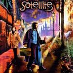

| Artist: | Satellite |
| Title: | A Street Between Sunrise And Sunset |
| Label: | Metal Mind Productions MMP 0199 |
| Length(s): | 7? minutes |
| Year(s) of release: | 2003 |
| Month of review: | [08/2003] |
| 1) | The Evening Wind | 12.45 |
| 2) | On The Run | 14.51 |
| 3) | Midnight Snow | 4.59 |
| 4) | No Disgrace | 5.34 |
| 5) | Not Afraid | 3.55 |
| 6) | Now | 10.13 |
| 7) | Fight | 4.29 |
| 8) | A Street Between Sunrise And Sunset | 11.18 |
| 9) | Children | 3.58 |
On The Run is the longest song on the album. It opens with wavery, quiet vocals and acoustic guitar, quite subtle. Then the piano sets in, again quietly. The band is in for dynamics on this one, as we can tell when the music burst loose in very symphonic passages where the typical Collage/Satellite keyboard sound vies with strong guitar lines. Very orchestral, very bombastic, very good too. Then the music winds down again, this time for some Genesis like guitar playing, after which the orchestral classical influences return again. At times the music is a bit too baroque for my tastes, but it is no big problem. Only after five minutes or so do we really arrive at the heart of the song it seems with a bombastic interlude that gives way to sharp guitar playing and finally a some more vocals. The vocal parts alternate between a more urgent and loud part and a lighter melodic one. There are also some parts which sound more like a modern kind of pop than symphonic rock, especially with all the percussion present. The guitar solo at the end is a vengeful one.
We ease into the melancholy Midnight Snow, which opens with acoustic guitar just like On The Run did. The percussion is easy-going, and might be programmed. Amirian sings in his most intimate voice. The chorus, still on the subdued side, is rather pop influenced. There is a certain Spanish feel that pervades this one. Only at the end does the electric guitar come in.
No Disgrace opens in a style that is strongly reminiscent of an early Arena song, Medusa I think. For the remainder this a very fluent track, with eveyone doing their thing in a light and airy way. The guitar takes the fore again in the second half of the track. Not Afraid like its predecessors harbours pop influences in its first minutes. The beat is light here, but it is there. Amirians vocals are low again, making his voice quite as bit less melodic, and there is a certain funkiness to the laid back instrumentation.
Now is the third epic track. A slow opener again with some drum 'n bass influences, a low singing Amirian, it takes to past the two minute mark before we arrive at some more powered up. Powerful chords on the rhythm guitar, light dancing keyboards (mimicking the violins in an orchestra). Then then the music takes a turn for the more dramatic (I am thinking of Arena again here), followed by choir parts and sizzling keyboards. Uplifting crescendo's, somewhat Yes like optimistic runs on whatever instrumental is at hand, and we are now halfway. The next few minutes is taken up by an extensive guitar solo, after which the bombastic elements return. The speed obtained in the more epic tracks, lies somewhat higher than in the more laid back shorter ones.
Fight is again one of those shorter laid back tunes this time with some mellotronlike excursion and some rowdy guitar playing as well. This does well to compensate the sugary remainder of the song. The guitar takes the fore at the end for a melodic solo, which we close with a vocal passage.
A Street Between Sunrise And Sunset opens with repetitive piano and a good vocal melody. Later the vocal melody sounds familiar recurring as it does from a previous song on this album. The overall feel of the song is dark and somber, with a bouncy gait, nicely dancing piano and modern rhythms. There is a certain bluesiness to the guitar playing. It continues to be quite dark and subtle. I am a bit reminded of Floyd's Shine On You Crazy Diamond, but only a little bit. There is a bit more swing coming into it, maybe something of a Santana feel. Only towards the end does the pace come into the music, for an urgent passage, percussive, up-beat and with distinctive new themes as well.
The closer if Children. Piano and light rhythms unfold to a melodious whole and a soft spoken vocal part. The second part is mainly soft effects.